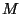

The Law of Demeter [13] is a style rule for OOP whose goal is to reduce the behavioral dependencies between classes. Its primary form says that a method  should only call methods (and access fields) on objects which are preferred suppliers: immediate parts on this, objects passed as arguments to , objects which are created directly in , and objects in global variables (in Java, public static fields). Limiting which methods can call which other methods keeps programmers from encoding too much information about the object model into a method, thus separating the structure concern from the behavior concern.
The drawback of following the Law of Demeter is that it can result in a large number of small methods scattered throughout the program, which can make it hard to understand the high-level picture of what a program does. The DemeterJ [14] [18] software allows the programmer to succinctly specify a traversal strategy in place of the many methods that would be needed to traverse a complex object structure. These traversal methods are automatically generated at compile-time by a preprocessor. A traversal strategy describes a traversal at a high level, only referring to the minimal number of classes in the program's object model: the root of the traversal, the target classes, and waypoints and constraints in between to restrict the traversal to follow only the desired set of paths. If the object model changes, often the traversal strategy doesn't need to be changed; the traversal methods can simply be re-generated in accordance with the new model, and the behavior adapts to the new structure. Programming with traversal strategies is thus known as adaptive programming [12].
With the addition of reflection to Java [7], it became possible to interpret a traversal strategy at runtime. DJ [16] is a pure-Java package that provides this capability. This makes it easier to add traversal strategies to a Java program, because there is no need to modify the compilation process to run the preprocessor or to convert the source code to the Demeter input language syntax. Instead traversal strategies can simply be expressed as Java strings in ordinary Java code, or even constructed dynamically from an external source not known at compile time.